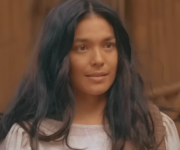
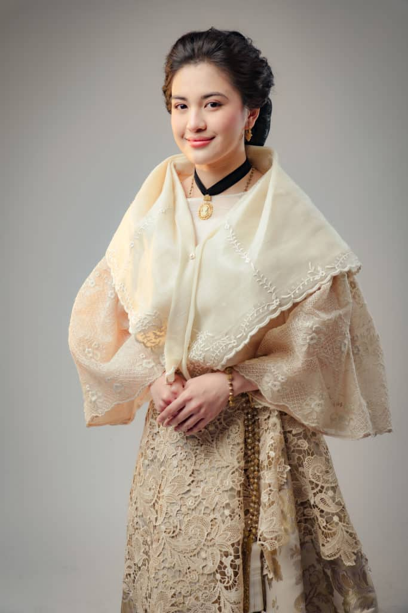

|
Juan Crisóstomo Ibarra y Magsalin
- Matalino, maalaga at matalinong binata na nag-aral sa Europa.
- Mestizo na may malaking pananaw sa buhay, pag-ibig ni Maria Clara.
|
|  |
Narcisa
- Baliw na ina nina Basilio at Crispin, nakatira siya sa San Diego.
- Nabaliw siya at natakot nang mawala ang kanyang mga anak.
|
|  |
María Clara de los Santos y Alba
- Maganda, at maputing mestiza na dalaga, mahal ni Crisóstomo Ibarra.
- Anak ni padre damaso, kaibigan ni ibarra mula pagkabata sila.
| |
| |